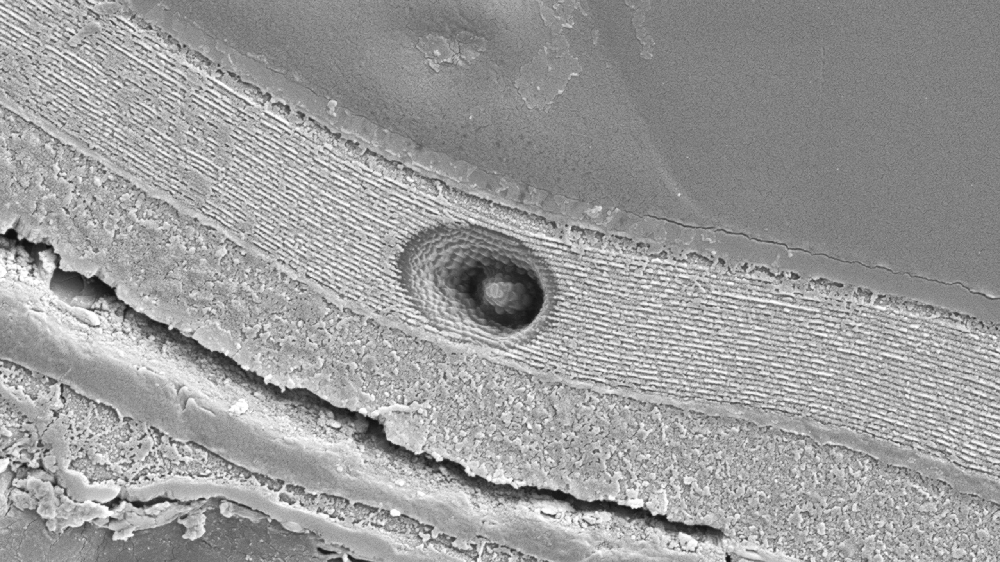
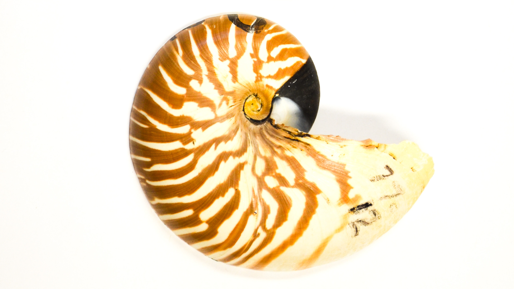
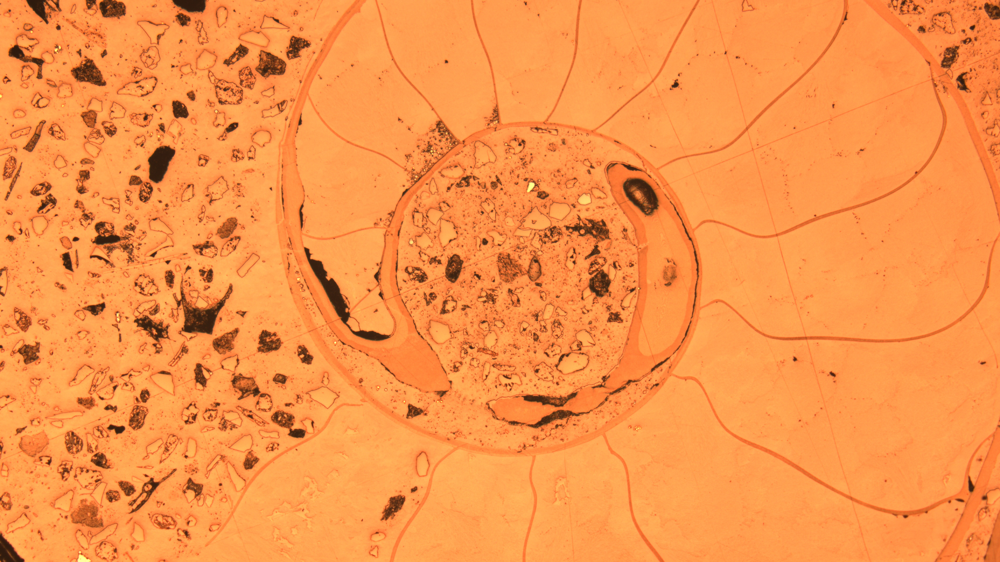

Fossils in Morocco.

An ion micropobe pit.

a modern Nautilus.

Morocco.

I study the history of Earth's surface environment and the organisms that lived on it by using geochemical proxies preserved in fossil shells. Because shells grow quickly and can be assessed for diagenesis, primary environmental signals such at temperature, water pH, and productivity can be infered on timescales of days to decades through most of the Phanerozoic. Additionally, careful assessment for alteration can ensure the primary environmental signals recorded at the time of growth are measured. My research is inherently interdisiplinary and connects biology, biomineralization, paleoclimate, material science, geochemistry, and sedimentary geology. I believe that working with both modern materials and the rock record will provide fresh insights into the Earth system and its interaction with the biosphere.